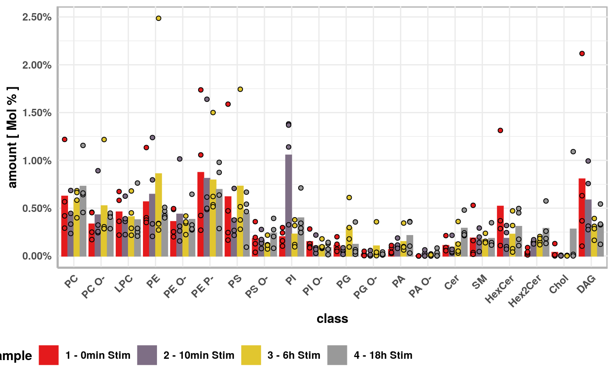

vignettes/Data-processing-in-ShinyLipids.Rmd
Data-processing-in-ShinyLipids.Rmdyou might rightfully ask yourself when loading a dataset into ShinyLipids. Luckily, we expose the internals of ShinyLipids in the form of clearly named functions for you to use even outside of the app. If you want to learn more about how exactly things work underneath the hood, you can click at the individual functions to read their documentation or have a look at the source code. But for now, let’s explore the example data together. We will follow the steps that ShinyLipids takes and inspect intermediate results.
First, we load ShinyLipids
library(ShinyLipids) input <- generateDefaultInput()
We can get the file path to our example data, given that ShinyLipids is installed, and open up a database connection to the database dump file
path <- system.file("extdata/exampleDatabase.db", package = "ShinyLipids") databaseConnection <- DBI::dbConnect(RSQLite::SQLite(), path)
We see, that our example file contains two tables (their names are mandatory).
DBI::dbListTables(databaseConnection) #> [1] "data2" "id_info"
From this connection, we load in our meta data “id_info” – information about the dataset(s) in the “data2” table:
metaData <- collectMetaData(databaseConnection) metaData #> # A tibble: 1 x 14 #> id title date_upload status sample_from date_sample extracted_by #> <dbl> <chr> <date> <chr> <chr> <date> <chr> #> 1 1 Exam… NA in pr… Harry Pott… NA Albus Dumbl… #> # … with 7 more variables: date_extraction <date>, measured_by <chr>, #> # date_measured <date>, distinct_samples <int>, data_lines <int>, file <chr>, #> # instruments <chr>
We see, that our ownly dataset in the database has id 1, so we use that id to collect the raw data and inspect the first 6 rows:
rawData <- collectRawData(con = databaseConnection, id = 1) head(rawData) #> # A tibble: 6 x 9 #> id sample_identifi… lipid value category func_cat sample sample_replicate #> <dbl> <chr> <chr> <dbl> <chr> <chr> <chr> <chr> #> 1 1 1Aa Cer … 0.00590 SP SP 1 - 0… 1 - 0min Stim_A #> 2 1 1Aa Cer … 0.276 SP SP 1 - 0… 1 - 0min Stim_A #> 3 1 1Aa Cer … 0.0497 SP SP 1 - 0… 1 - 0min Stim_A #> 4 1 1Aa Cer … 0.0690 SP SP 1 - 0… 1 - 0min Stim_A #> 5 1 1Aa Cer … 0.00325 SP SP 1 - 0… 1 - 0min Stim_A #> 6 1 1Aa Cer … 0.0219 SP SP 1 - 0… 1 - 0min Stim_A #> # … with 1 more variable: sample_replicate_technical <chr>
Next, we run the data processing steps.
plotData <- rawData %>% imputeMissingIf(input) %>% addLipidProperties() %>% standardizeWithinTechnicalReplicatesIf(input) %>% filterRawDataFor(input) %>% standardizeRawDataWithin(input) %>% createPlotData(input) head(plotData) #> # A tibble: 6 x 4 #> class sample sample_replicate value #> <fct> <fct> <fct> <dbl> #> 1 PC 1 - 0min Stim 1 - 0min Stim_A 0.575 #> 2 PC 1 - 0min Stim 1 - 0min Stim_B 0.425 #> 3 PC 1 - 0min Stim 1 - 0min Stim_C 0.295 #> 4 PC 1 - 0min Stim 1 - 0min Stim_D 1.24 #> 5 PC 2 - 10min Stim 2 - 10min Stim_A 0.238 #> 6 PC 2 - 10min Stim 2 - 10min Stim_B 0.338
meanPlotData <- summarisePlotData(plotData, input) head(meanPlotData) #> # A tibble: 6 x 8 #> class sample SD SEM N value CI_lower CI_upper #> <fct> <fct> <dbl> <dbl> <int> <dbl> <dbl> <dbl> #> 1 PC 1 - 0min Stim 0.418 0.104 4 0.632 0.300 0.965 #> 2 PC 2 - 10min Stim 0.196 0.0491 4 0.430 0.274 0.587 #> 3 PC 3 - 6h Stim 0.131 0.0328 4 0.590 0.486 0.695 #> 4 PC 4 - 18h Stim 0.304 0.0760 4 0.737 0.496 0.979 #> 5 PC O- 1 - 0min Stim 0.147 0.0367 4 0.337 0.220 0.454 #> 6 PC O- 2 - 10min Stim 0.315 0.0787 4 0.434 0.184 0.685
plt <- createMainPlot(plotData = plotData, meanPlotData = meanPlotData, pairwiseComparisons = NULL, input = input) plt
